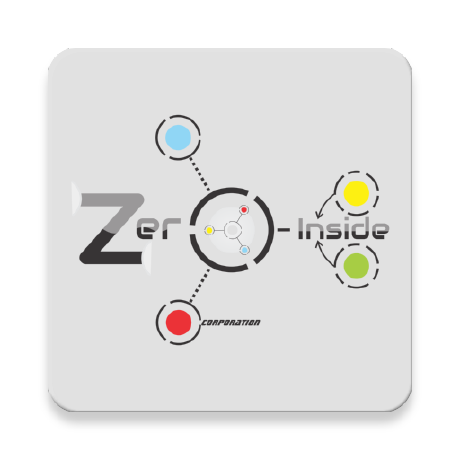

Zero-EFDSP

Welcome,
Mr. Jhonny Coffee Bengras
General
Home
Dashboard
Zero-EFDSP |
Early Fall Detection for Stroke Patient
Real Time Data -
Parameter Data Received
Real Time Graph -
Accelerometer Sensors
Real Time Graph -
Gyroscope Sensors